Le vin bio est le résultat d'une viticulture qui
revient à une culture de la vigne excluant produits phytosanitaires et intrants chimiques. Nous allons plus
loin encore dans la démarche avec le vin nature sans sulfite. De la culture de
la vigne à la mise en bouteille, tous nos vins bio respectent les terroirs dans
lesquels ils sont fabriqués, les hommes et femmes qui y travaillent et bien sûr les amateurs de vins qui les dégustent.
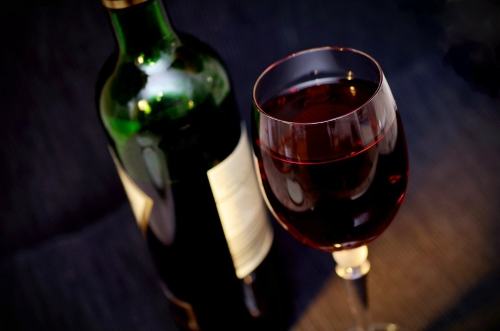
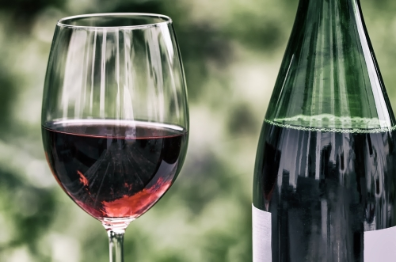
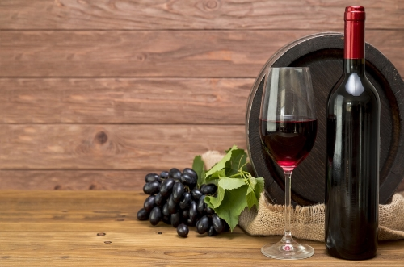
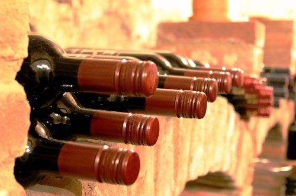
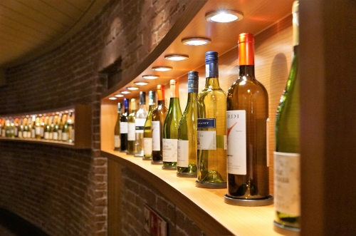
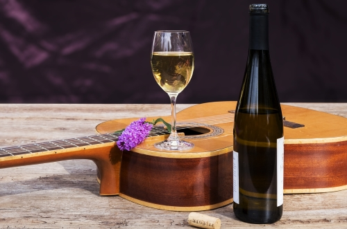
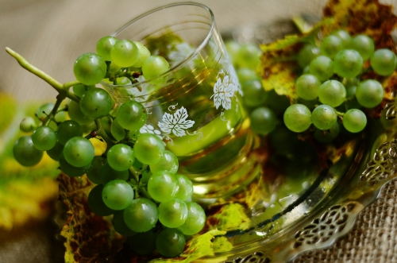
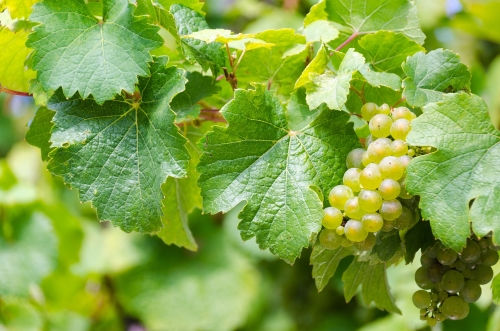
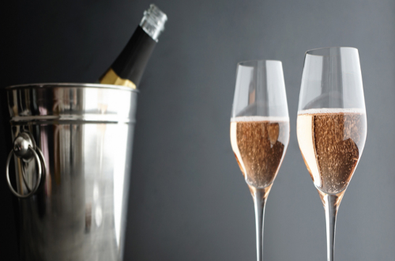
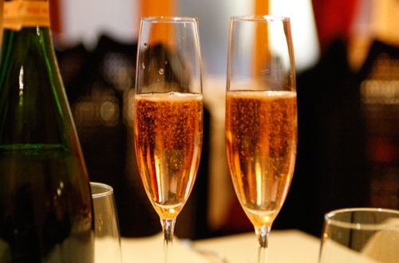
Découvrez la sélection de bonnes bouteilles de vin biologique. Du Languedoc à Bordeaux en passant par toutes
les régions de France et du monde, nous vous proposons un grand choix de bouteilles et cubi produits en
agriculture biologique à servir à table ou à offrir. Tous nos vins sont garantis sans sulfite.
Qui sommes nous ?
Le vin bio en France
La viticulture n’a pas à rougir quant à son engagement dans la culture biologique hexagonale puisque, avec 9%
des vignes sous ce mode d’exploitation, elle est le fer de lance de l’agriculture bio. Le nombre de vignerons
se convertissant est en hausse, ils ont même été 300 à le faire sur les 6 premiers mois de l’année 2016, selon
l’agence bio, portant ainsi les vignerons bio français à un nombre proche de 6000. Au niveau mondial,
l’hexagone est le troisième pays producteur de vins bios derrière l’Espagne (1) et l’Italie (2).
Cet engouement se conjugue avec celui de la consommation qui affiche, elle aussi une nette progression. Une
augmentation de 10% des ventes en grandes surfaces à été enregistrée par exemple en 2015, par rapport à
l’année précédente. Tout un symbole. Ce sont d’ailleurs les jeunes qui se tournent le plus vers le vin bio :
les moins de 35 ans représentent 15% des consommateurs de vin, mais ce chiffre monte à 21% lorsque on évoque
le vin bio.
La production de vin bio est régie par un règlement européen qui précise les règles de production,
transformation, étiquetage et importation des produits bio. Ce règlement est en vigueur depuis 1991 et a été
actualisé en 2007-2008.
De 1991 à juillet 2012, la réglementation portait uniquement sur les techniques culturales appliquées à la
vigne et pas sur la vinification. A partir du 1er août 2012, le réglement européen est étendu à la
vinification biologique, ce qui permet la mise en vente de vins étiquetés "vin biologique".
Si Dom Pérignon tient son nom d’un légendaire moine bénédictin, ce champagne représente le
mieux, depuis ces vingt dernières années les sommets absolus d’équilibre et de régularité.
L’effervescence éthérée, la grande finesse de texture et le goût toasté provient autant de la
qualité incontestable des raisins que du savoir-faire œnologique et de la rigueur de ce
personnage qui a construit et entretenu l’image de ce champagne mythique. " Chaque millésime de
Dom Pérignon est une pièce unique"... Cette cuvée resplendit par sa fraîcheur, sa finesse, sa
complexité et son harmonie parfaite. Florale, aromatique, subtilement épicée, toute en rondeur,
qui oserait résister ?
Veuve Clicquot
Veuve Clicquot Ponsardin est une maison de Champagne fondée en 1772. Son siège est à Reims. Elle
appartient au groupe de luxe LVMH. Signe de fête, de luxe et d’élégance, le champagne Brut Carte
Jaune est avant tout un grand vin incarnant parfaitement le style de la Maison Veuve Clicquot.
On apprécie la finesse de ses bulles ainsi que sa chair équilibrée et séductrice. Les notes de
fruits blancs aux légères saveurs toastées donnent une rondeur tout en brioche ainsi qu'une
finale persistante et agréable. Un incontournable !
MOËT & CHANDON
Chaque Grand Vintage est unique, une interprétation libre et personnelle de l’année par le Chef
de Cave de Moët & Chandon. 74ème millésime de l’histoire de la Maison, Grand Vintage 2012 se
distingue par sa maturité, sa complexité et son charisme.Le Grand Vintage 2012 évoque la
transition du printemps à l’été. Il offre une certaine harmonie, accompagnée de douceur et de
fraîcheur
RUINART
Fondée en 1729, la Maison Ruinart est la plus ancienne Maison de champagne. Animée par une quête
permanente d‘excellence et d’authenticité, la Maison a fait le choix du chardonnay, cépage rare
et fragile, qui apporte à ses cuvées une élégance et une fraîcheur aromatique exceptionnelles.
Délicat et fragile, le chardonnay s'épanouit au fil d'une lente maturation dans la fraicheur des
crayères: Jusqu'à 3 ans pour les champagnes non millésimés, 9 à 10 années pour un Dom Ruinart.
Nos Champagnes Rosé
BILLECART-SALMON
La maison Billecart-Salmon, orfèvre de la champagne, déploie une gamme raffinée et élégante qui
en a fait son succès auprès des plus grandes tables de la gastronomie française et à travers le
monde. Fondée en 1818 par Nicolas François Billecart et Elisabeth Salmon, la devise de la maison
a toujours été "privilégier la qualité, viser l'excellence". De son brut jusqu'à ses cuvées
élitistes, Billecart-Salmon est d'une régularité exemplaire.
Veuve Clicquot
LA GRANDE DAME - Fondée à Reims en 1772, c’est la fameuse Veuve-Clicquot, Nicole Barbe
Ponsardin, dynamique, intelligente et novatrice, qui apporte à cette maison une dimension
internationale. Le style, véritablement marqué par le Pinot noir donne des champagnes de bouche,
vineux et structurés accompagnés par une réelle finesse de texture et de goût. Quant à leur
potentiel de garde, il suffit de songer aux flacons remontés en 2010 au fond de la Baltique !
Vinifiés au début du XIXème siècle ils sont restés très bien conservés même si plus doux que les
champagnes contemporains.
Le symbole de la Maison depuis 1772, l'équilibre parfait entre puissance et finesse.
Laurent-PERRIER
Une référence, peut-être même l'une des plus belles valeurs en champagne rosé !Proposé dans de
splendides flacons Laurent-Perrier, la cuvée brut rosé est tout simplement remarquable. Ses
notes de petits fruits rouges et sa remarquable fraîcheur en font un des champagnes rosés les
plus demandés sur le marché. Rond, friand, il évolue avec une finesse superbe et une souplesse
parfaite. C'est l'un des meilleur champagne rosé, à la fois vineux et très frais.
MOET & CHANDON
La cuvée Ice Impérial rosé spécialement conçue pour être dégusté sous le soleil, avec des
glaçons ! Découvrez la nouvelle façon d'apprécier le champagne : la Maison Moet et Chandon a mis
au point cette cuvée Ice Impérial Rosé à déguster dans un grand verre piscine, rempli de
glaçons. Ample et charnu en bouche, avec une richesse aromatique ample et des notes de
pamplemousses et de gingembre, vous serez enchanté par l'intensité aromaique de ce champagne à
la fraîcheur incomparable ! Le résultat est sans appel, une véritable vague de fraîcheur, un
vrai régal !
Nos Vins rouges
Château Siran
Le Château Laffitte Carcasset profite d’une situation géographique remarquable au cœur de
Saint-Estèphe et à proximité des Crus Bourgeois Châteaux de Pez et Tronquoy Lalande.
L’ AOC Saint-estèphe produit sur la commune de Saint-Estèphe dans le Médoc, une des subdivisions
du vignoble de Bordeaux. Située au nord de l'appellation pauillac, enclavée dans celle
produisant le haut-médoc, c'est la plus septentrionale des appellations communales du vignoble
du Médoc.
Châteauneuf-du-Pape
Le châteauneuf-du-pape est un vin d'appellation d'origine contrôlée produit sur les communes de
Châteauneuf-du-Pape, d'Orange, de Bédarrides, de Sorgues et de Courthézon, en Vaucluse.
Château Malbec
Ce Malbec 2018 est impressionnant, il est subtil, équilibré et élégant... Bienvenue en Argentine
!
De couleur très sombre, cette cuvée propose un ensemble intense d'arômes fruités et épicés avec
une bonne aptitude au vieillissement (7 ou 8 ans). Un vin d' Argentine aux tannins souples qui
est capable d'atteindre des sommets de qualité et d'élégance... Juteux et délicieux, il est à
boire de suite et peut se conserver parfaitement en cave.
Château Laffitte Carcasset
Le Château Laffitte Carcasset profite d’une situation géographique remarquable au cœur de
Saint-Estèphe et à proximité des Crus Bourgeois Châteaux de Pez et Tronquoy Lalande.
L’ AOC Saint-estèphe produit sur la commune de Saint-Estèphe dans le Médoc, une des subdivisions
du vignoble de Bordeaux. Située au nord de l'appellation pauillac, enclavée dans celle
produisant le haut-médoc, c'est la plus septentrionale des appellations communales du vignoble
du Médoc.
Nos Vins Blanc
Château Suduiraut
Le Suduiraut, est 1er Cru Classé de Sauternes, un vin liquoreux français d'appellation d'origine
contrôlée produit dans le Sauternais, une des subdivisions du vignoble de Bordeaux.
Sous le règne d'Henri IV, Suduiraut était un château fort et se nommait «cru du Roy». Incendié
pendant la Fronde, il a été reconstruit en 1670 par le comte Blaise de Suduiraut, donnant le
magnifique château Grand Siècle que nous connaissons aujourd'hui, entouré de jardins imaginés
plus tard par Le Nôtre.
Viña Gravonia crianza
Viña Gravonia et Tondonia sont particulièrement connus et admirés pour leurs blancs ! L'aspect
et la couleur de ce vin prouvent l'extraordinaire travail effectué dans cette cave par de
véritables maîtres dans l'art du vieillissement, élevé pendant quatre ans en barriques de chêne
américain, longuement mûri en bouteille jusqu'à ce jour, il garde toutefois sa superbe robe
dorée.
Virginie de VALANDRAUD
Le Virginie de VALANDRAUD millésime 2014 est une bonne année avec de ses assemblages délicats de
cépages de Sauvignon et Sémillon dans cette origine de Bordeaux
La Croix de Carbonnieux
Le second Vin du Château Carbonnieux Blanc : un délice à l'apéritif !!
Terres, vignes et savoir-faire, vos papilles sauront reconnaître la "griffe" d'un château
mondialement célèbre. Finesse et minéralité, parfums de fleurs et de fruits, une élégante
minéralité au léger goût exotique... Un excellent rapport qualité-prix pour ce magnifique second
vin, et certainement l'une des meilleures affaires de l'appellation Pessac-Léognan !
Articles
Nom
Vin de bordeaux
Quantitée(s)
1
Prix
2200€
Total
2200€
Nom
Catena MALBEC
Quantitée(s)
2
Prix
2200€
Total
2200€
Nom
CHATEAU DU PAPE
Quantitée(s)
3
Prix
2200€
Total
2200€
Nom
DE SIRAN MARGAUX
Quantitée(s)
2
Prix
2200€
Total
2200€
Coût total du panier :
22000€
PAYPAL
MASTERCARD
VISA
CHÈQUE DE BANQUE
CARTE DE CRÉDIT
MEILLEURS PRIX GARANTI OU REMBOURSÉ*
DISPONIBLE EN 24h CHEZ VOUS
PAIEMENT SÉCURISÉ
100% DES VINS DÉGUSTÉS ET APPROUVÉS
Service clients
Transport & livraison
Paiement
Contact entreprise
Société
Qui sommes nous ?
Conditions générales de vente
Politique de confidentialité
Plan du site
FAQ
Mention légal
Produits
Toutes nos marques
Nouveautés
Foire aux vins
Primeurs
Partenaires
Stickers personnalisé
Cryothérapie
LVMH
Fenty
Lacoste
La MANU CROISIERE
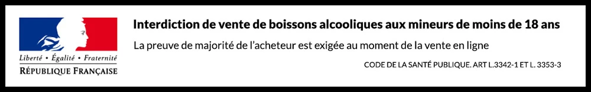
L'abus d'alcool est dangereux pour la santé, à consommer avec modération


 NomCHATEAU DU PAPEQuantitée(s)3Prix2200€Total2200€
NomCHATEAU DU PAPEQuantitée(s)3Prix2200€Total2200€